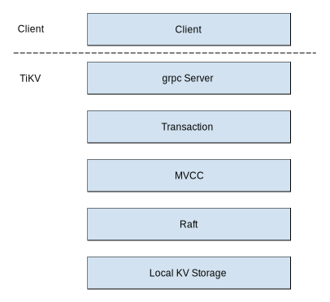
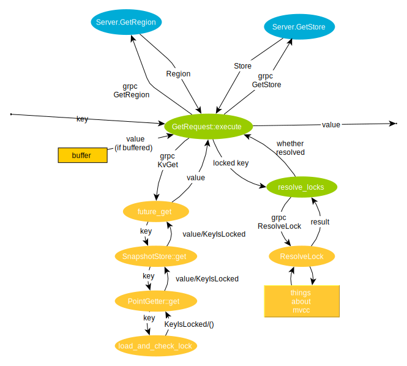

SIG-transaction
Rendered version (Recommended)
The transactions special interest group (SIG-transaction) are a group of people interested in transactions in distributed databases. We have a focus on transactions in TiKV and TiKV clients (including TiDB, which use TiKV go-client), but discuss academic work and other implementations too.
SIG activites
- talks on distributed transactions,
- a reading group for academic papers,
- discussion of transaction research and implementations on Slack,
- help understanding and configuring transactions in TiKV and TiDB,
- support for contributors to TiKV and related projects.
Get involved
-
You can join us in #sig-transaction in the TiKV community Slack; come say hi! We use English or Chinese. (Recommended)
-
You can read or join our announcement mailing list, so you can stay up to date with what we're up to.
People
See people.md. If you want to mention us in an issue, PR, or comment, use @tikv/sig-txn.
If you have questions about the SIG or transactions in TiKV, please get in touch with either of the leaders!
Resources
Repositories
- TiKV,
- TiKV Rust client,
- TiKV Go client,
- TiKV Java client,
- kvproto (protocol buffers which support transactions, among other things).
Ongoing transactions work in TiKV
- Transaction issues,
- sig-transaction issues,
- storage issues (most of these are transaction-related in some way),
- project: Pipelined pessimistic lock,
- project: Large transactions,
- project: Green GC,
- project: Async commit.
Transactions in TiKV
This doc has some notes on some of the terms and high-level concepts used when discussing transactions in TiKV. It is work in progress, and not yet in-depth.
The TiKV transaction system is based on part of the Percolator system (developed by Google). TiKV has the transactional parts, but not the observer parts of Percolator.
Read more:
Principles and foundations
- Wikipedia article on isolation
- Wikipedia article on snapshot isolation
- Jepsen post on consistency
- Percolator paper
- Spanner paper
APIs
TiKV offers three kinds of API: raw, transactional, and versioned (which is still in development).
The raw API gives direct access to the keys and values in TiKV. It does not offer any transactional guarantees.
The transactional API encodes data using MVCC (see below). By collaborating between the client and the TiKV server, we can offer ACID transactions.
There is nothing preventing a client using both APIs, however, this is not a supported use case and if you do this you have to be very, very careful in order to not break the guarantees of the transactional API.
Reads and writes
When discussing transactions, we usually talk about reads and writes. In this context, a 'write' could be any kind of modifying operation: creating, modifying, or deleting a value. In some places these operations are treated differently, but usually we just care about whether an operation modifies (a write) or doesn't modify (a read) the data.
Two-phase commit
TODO
Optimistic and pessimistic transactions
TiKV supports two transaction models. Optimistic transactions were implemented first and often when TiKV folks don't specify optimistic or pessimistic, they mean optimistic by default. In the optimistic model, reads and writes are built up locally. All writes are sent together in a prewrite. During prewrite, all keys to be written are locked. If any keys are locked by another transaction, return to client. If all prewrites succeed, the client sends a commit message.
Pessimistic transactions are the default in TiKV since 3.0.8. In the pessimistic model, there are locking reads (from SELECT ... FOR UPDATE statements), these read a value and lock the key. This means that reads can block. SQL statements which cause writes, lock the keys as they are executed. Writing to the keys is still postponed until prewrite. Prewrite and commit works
TODO pessimistic txns and Read Committed
Interactions
between optimistic and pessimistic txns TODO
Read more:
Multi-Version Concurrency Control (MVCC)
TiKV supports storing multiple values for a single database row key. Whenever TiKV stores a row key, it concatenates the raw bytes of the key with a 64-bit timestamp value. Thus, the row key has the logical format key,timestamp1, key,timestamp2 and so on for its different versions. Helper functions exist in the txn_types module to affix the timestamp to a given raw key, to extract only the timestamp from a versioned key and so on. This mechanism is what enables TiKV to support MVCC when co-operating clients make use of its transaction APIs such as get() or get_for_update(). Both optimistic and pessimistic transactions are supported.
Optimistic transactions: At the beginning of an optimistic transaction, a start timestamp (start_ts) is generated. When reading data, the transaction will only scan keys whose timestamp component is less than start_ts. This ensures that only data committed before the beginning of the transaction is read. At the end of the transaction, a commit timestamp (commit_ts) is generated. All writes made by the transaction will have this same commit_ts affixed to the raw key. The transaction will abort during prewrite if any of the keys being written are found to be already present in the database with version > commit_ts. This is called a write-conflict.
TODO: Some important pieces of code to read regarding optimistic transactions are..
Pessimistic transactions: Similar to the above, a start timestamp (start_ts) is generated at the beginning of the transaction. When reading data, the transaction will first attempt to lock each key using the timestamp at the point of the read (called for_update_ts). If the key already has a version with timestamp > for_update_ts, a write-conflict error is returned and the client has the option of retrying from that query onwards, without having to rollback to the start of the transaction. Otherwise, the key is locked by the current transaction. At the end of the transaction, a commit timestamp is obtained and used for the writes, just as with optimistic transactions.
TODO: Some important pieces of code to read regarding pessimistic transactions are..
Consistency and isolation properties
TODO
Timestamps
TODO what are timestamps? How are they represented, used, generated? AKA ts, version
Some timestamps used in transactions
start_ts: when the client starts to build the commit; used to identify a transaction.commit_ts: after successful prewrite, before commit phase.for_update_ts: TODOmin_commit_ts: TODOcurrent_ts: TODO
Regions
TODO
Deadlock detection
TODO
GC
TODO
Retries
TODO
Constraints and assumptions
TODO for each: why? implications, benefits
Timestamps are supplied by the client
This decision benefits "user experience", performance and simplicity.
First, it gives users more control over the order of concurrent transactions.
For example, a client commits two transactions: T1 and then T2. If timestamps are supplied by the user, it can assure that T1 won't read any effects of T2 if T1's timestamp is smaller than T2's. While if we let TiKV get the timestamp, the user cannot get this guarantee because the order of processing T1 and T2 is nondeterministic.
Second, it simplifies the system. Otherwise we have to let TiKV maintain states of all active transactions.
Third, it is beneficial for performance. Large volume of transactions could overburden TiKV server. In addition, GC of inactive transactions is a problem.
TODO: further elaboration
All timestamps are unique
TODO
It's true in previous versions of TiKV. Enabling 1PC or Async commit features could break this guarantee.
Multiple transactions may have identical commit timestamps. Start timestamps are still unique. One transaction must have distinct start_ts and commit_ts, unless it's rolled back. The commit_ts of a rollback record is the start_ts.
From a user's perspective, reads never fail but might have to wait
Reads never fail in the read committed level. The client will always read the most recent committed version.
Read requests can return KeyError in the snapshot isolation level if the key is locked with lock_ts < read_ts. Then the client can try to resolve the lock and retry until it succeeds.
The transaction layer does not know about region topology, in particular, it does not treat regions on the same node differently to other regions
A TiKV instance does not have to know the topology. The whole span of data is partitioned into regions. Each TiKV instance will only accept requests involving data lying in its regions. The client makes sure any request is sent to the right TiKV node that owns the data the request needs.
The design decouples transaction logic and physical data distribution. It makes shceduling more flexible and elastic. Imagine a redistribution of regions among a TiKV cluster that does not require any downtime or maintainance to either clients or TiKV instances. PD as the scheduler can ask TiKV to redistribute regions, and send the latest region info to clients.
The overhead caused by such decoupling is extra network communication. Though clients must acquire regions' and TiKV stores' addresses from PD, these information be cached locally. If topology changes, client may failed some request and retry to refresh its cache. A long-live client should suffer little from it.
If committing the primary key succeeds, then committing the secondary keys will never fail.
Even if the commit message sent to the secondary key fails, the lock of a secondary key contains information of its primary key. Any transaction that meets the lock can recognize its state by reading the primary key and help commit the secondary key.
This property allows returning success once the primary key is committed. Secondary keys could be committed asynchronously and we don't have to care about the result.
New and planned technology
These features are not well-documented elsewhere, so should have more in-depth descriptions here.
Glossary
- Jepsen report on isolation and consistency in TiDB
TODO
- Column family (CF)
- Prewrite
- Commit
- 1PC
- two-phase commit (2PC)
- Rollback
- Resolve lock
- Write conflict
Transaction Handling Process
This article will introduce how transaction requests are handled in TiKV.
The urls in this article refers to the code which performs certain operation.
In a system which consists of TiDB and TiKV, the architecture looks like this:

Though client is not part of TiKV, it is also an important to read some code in it to understand how a request is handled.
There're many implements of client, and their process of sending a request is similiar, we'll take client-rust as an example here.
Basically, TiKV's transaction system is based on Google's Percolator, you are recommended to read some material about it before you start reading this.
Begin
You'll need a client object to start a transaction.
The code which creates a transaction is here, you can see the client includes a PdRpcClient, which is responsible for communicate with the pd component.
And then you can use Client::begin to start an transaction.
#![allow(unused)] fn main() { pub async fn begin(&self) -> Result<Transaction> { let timestamp = self.current_timestamp().await?; Ok(self.new_transaction(timestamp)) } }
Firstly, we'll need to get a time stamp from pd, and then we'll create a new Transaction object by using current timestamp.
Single point read
We can use Transaction::get to get a single value for a certain key.
This part of code is here.
We'll try to read the local buffered key first. And if the local buffered key does not exist, a GetRequest will be sent to TiKV.
You may have known that TiKV divide all the data into different regions, and each replica of some certain region is on its own TiKV node, and pd will manage the meta infomation about where are the replicas for some certain key is.
The code above seems doesn't cover the steps which decide which TiKV node should we send the request to. But that's not the case. The code which do these jobs is hidden under execute, and you'll find the code which tries to get the TiKV node here , and it is called by retry_response_stream here:
#![allow(unused)] fn main() { fn store_for_key( self: Arc<Self>, key: &Key, ) -> BoxFuture<'static, Result<Store<Self::KvClient>>> { self.region_for_key(key) .and_then(move |region| self.map_region_to_store(region)) .boxed() } }
Firstly, it will use grpc call GetRegion in region_for_key to find out which region is the key in.
The remote fuction GetRegion it defined is here in pd.
And then we'll use grpc call GetStore in map_region_to_store to find out the leader of region.
The remote fuction GetStore it defined is here in pd.
Finally we'll get a KvRpcClient instance, which represents the connection to a TiKV replica.
Then let's back to retry_response_stream, next function call we should pay attention to is store.dispatch, it calls grpc function KvGet.
And finally we reach the code in TiKV's repo. In TiKV, the requests are handled by Server struct , and the KvGet will be handled by future_get here.
Firstly we'll read the value for a key by using Storage::get.
get function is a little bit long, we'll ignore STATIC parts for now, and we'll get:
#![allow(unused)] fn main() { pub fn get(&self, mut ctx: Context, key: Key, start_ts: TimeStamp) -> impl Future<Item = Option<Value>, Error = Error> { const CMD: CommandKind = CommandKind::get; let priority = ctx.get_priority(); let priority_tag = get_priority_tag(priority); let res = self.read_pool.spawn_handle( async move { // The bypass_locks set will be checked at most once. `TsSet::vec` is more efficient // here. let bypass_locks = TsSet::vec_from_u64s(ctx.take_resolved_locks()); let snapshot = Self::with_tls_engine(|engine| Self::snapshot(engine, &ctx)).await?; let snap_store = SnapshotStore::new(snapshot, start_ts, ctx.get_isolation_level(), !ctx.get_not_fill_cache(), bypass_locks, false); let result = snap_store.get(&key, &mut statistics) // map storage::txn::Error -> storage::Error .map_err(Error::from); result }, priority, thread_rng().next_u64(), ); res.map_err(|_| Error::from(ErrorInner::SchedTooBusy)) .flatten() } }
This function will get a snapshot, and then construct a SnapshotStore by using the snapshot, and then call get on this SnapshotStore, and finally get the data we need.
The bypass_locks part is a tricky optimize related to large transaction, see this pr.
Then we'll view the code of SnapshotStore::get, you'll see that in fact it consturcted a PointGetter, and then call the get method on PointGetter:
#![allow(unused)] fn main() { pub fn get(&mut self, user_key: &Key) -> Result<Option<Value>> { if !self.multi { // Protect from calling `get()` multiple times when `multi == false`. if self.drained { return Ok(None); } else { self.drained = true; } } match self.isolation_level { IsolationLevel::Si => { // Check for locks that signal concurrent writes in Si. self.load_and_check_lock(user_key)?; } IsolationLevel::Rc => {} } self.load_data(user_key) } }
As we can see, if the required isolation_level is Si, we need to check whether there's any locks which may conflict with current get. If we find some, we'll return a KeyIsLocked error:
#![allow(unused)] fn main() { fn load_and_check_lock(&mut self, user_key: &Key) -> Result<()> { self.statistics.lock.get += 1; let lock_value = self.snapshot.get_cf(CF_LOCK, user_key)?; if let Some(ref lock_value) = lock_value { self.statistics.lock.processed += 1; let lock = Lock::parse(lock_value)?; if self.met_newer_ts_data == NewerTsCheckState::NotMetYet { self.met_newer_ts_data = NewerTsCheckState::Met; } lock.check_ts_conflict(user_key, self.ts, &self.bypass_locks) .map_err(Into::into) } else { Ok(()) } } }
And then we'll use PointGetter's load_data method to load the value.
Now we have the value in GetResponse. But if the key is locked, client still need to resolve the locked keys. This will still be handled in retry_response_stream.
Resolve locks
First, the client will take the locks we met from the response, and then we'll use resolve_locks to try to resolve them:
We find all the locks which are expired, and resolve them one by one.
Then we'll get lock_version's corresponding commit_version (might be buffered), and use it to send cleanup_request.
It seems that using CleanupRequest directly is deprecated after 4.0 , then we'll simply igonre it.
And then it is the key point: resolve_lock_with_retry, this function will construct a ResolveLockRequest, and send it to TiKV to execute.
Let's turn to TiKV's source code, according to whether the key on the request is empty, ResolveLockRequest will be converted into ResolveLockReadPhase + ResolveLock or ResolveLockLite. The difference between those two is that ResolveLockLite will only handle the locks Request ask for resolve, while ResolveLock will resolve locks in a whole region.
The handling of ResolveLock has 2 parts: the read phase is here, which is resposible for read out the locks and construct the write phase command, and the write phase is here, which is responsible for the release work.
These two code part uses MvccTxn and MvccReader, we'll explain them later in another article.
Comments here gives a good intruduction of what ResolveLock do.
After all expired_locks are resolved, a new GetRequest is sent, and the get process will be done again until it success.
And then, the result value is returned. (Finally!)
Let's summerize the process with a dataflow diagram.

Scan
On the client side, scan is almost the same as single point get, except that it sends a KvScan grpc call instead of KvGet.
And on the TiKV side, things are a little different, firstly, the request will be handled by future_scan, and then Storage::scan，and finally we'll find out the function which really do the job is a Scanner, and we'll cover this part in another document.
Write
In fact, write just write to local buffer. All data modifications will be sent to TiKV on prewrite.
Commit
Now comes the most interesting part: commit, just like what I mentioned, commit in TiKV is based on Percolator, but there are several things that are different:
-
Percolator depends on BigTable's single row transaction, so we must implement something alike by ourselves in TiKV.
-
We need to support pessimistic transaction
Pessimistic transaction enable TiDB to have a better MySQL compatibility, and save rollbacks under high load.
But it introduces some other problems such as:
-
dead lock
In optimistic transaction handling, dead lock won't happen because in the prewrite stage, a transaction would about if another transaction holds a lock it needs, and in the read stage, the locks from a dead transaction are resolved.
-
So let's see how TiKV deal with these things.
Client
From the client side, the commit process is easy, you can see we use a TwoPhaseCommitter to do the commit job, and what it does is just as the Percolator paper says: prewrite, commit_primary and finally commit_secondary.
AcquirePessimisticLock
This is used in the pessimistic transaction handling. It locks certain keys to prevent them from being changed by other transactions.
This one does not exists in client-rust for now, so you have to read TiDB's code here.
Basically, it sends a PessimisticLockRequest to TiKV, and TiKV will handle it here, it just run MvccTxn::acquire_pessimistic_lock for each key to lock, which just put a lock on the key, the lock is just like the lock used in prewrite in optimistic transaction, the only differece is its type is LockType::Pessimistic.
And the it returns whether the lock is successful. If not, it will also return the lock to wait for.
Prewrite
On TiKV side, the prewrite process happens here in process_write_impl.
The first few lines of code (if rows > FORWARD_MIN_MUTATIONS_NUM part) is not covered by the TiKV Source Code Reading blogs. I guess it means:
if there's no "write" record in [mutations.minKey, mutation.maxKey] {
skip_constraint_check = true;
scan_mode = Some(ScanMode::Forward)
}
As far as I understand, it just provides a optimized way of checking the "write" column, see tikv#5846 for details.
And no matter whether this branch is taken, we'll construct a MvccTxn , and then use it to do the prewrite job for each mutation the client sent to the TiKV server.
The MvccTxn::prewrite function just do what the Percolator describes: check the write record in [start_ts, ∞] to find a newer write (this can be bypassed if skip_constraint_check is set, we can ignore this check safely in situations like import data). And then check whether the current key is locked at any timestamp. And finally use prewrite_key_value to lock the key and write the value in.
Latches
Just as I mentioned, there's no such things like "single row transaction" in TiKV, so we need another way to prevent the key's locking state changed by another transaction during prewrite.
TiKV use Latches to archieve this, you can consider it as a Map from key('s hashcode) to mutexes. You can lock a key in the Latches to prevent it be used by other transactions.
The latches is used in try_to_wake_up , this is called before each command is executed, it will lock all the latches the commands used.

PrewritePessimistic
PrewritePessimistic's handling is very similiar to Prewrite, except it:
- doesn't need to read the write record for checking conflict, because the potential conflicts have already checked during acquiring the lock
- downgrade the pessimistic lock to optimistic lock during prewrite, so the following commit process would be the same as the commit process in optmistic transaction handling
- needs to prevent deadlock
Dead lock handling
There won't be a dead lock in the optimistic transaction handling process, because we can know all the keys to lock during the prewrite process, so we can lock them in order.
But during the pessimistic transaction handling process, the situation is very different: when to lock a key or which keys to lock are totally decided by the user, so for example:
transaction A:
lock key a;
do some process;
lock key b;
do some other process;
commit
and
transaction B:
lock key b;
do some process;
lock key a;
do some other process;
commit
If you are unlucky, transaction A will hold the lock on a and try to get the lock on b, and transaction B will hold the lock b and try to get the lock on a, and neither of them can get the lock and continue with their jobs, so a dead lock occurred.
TiKV use deadlock detection to prevent this kind of situation.
The deadlock detector is made up with two parts: the LockManager and the Detector.
Basically, these two make a Directed acyclic graph with the transactions and the locks it require, if adding a node may break the "acyclic" rule, then a potential deadlock is detected, a separate doc will be add to describe the LockManager.
(Do) Commit
After prewrite is done, the client will do the commit works: first commit the primary key, then the secondary ones, both these two kind of keys' commit are represented by the Commit command and handled here.
In the commit process we just use MvccTxn::commit to commit each key, which it does is much like Percolator describes,.
We also collect the released locks and use it to wake up the waiting pessimistic transactions.
Rollback
(Optimistic) Rollback
On the client side, rollback just construct a BatchRollbackRequest with the keys changed in this transaction and a start_version which identify the transaction to be rolled back, and send it to server.
On the server side, it just call MvccTxn::rollback here, and MvccTxn::rollback is a direct proxy to MvccTxn::cleanup.
Let's view the code in MvccTxn::cleanup:
The first branch in the match is taken when there's a lock on the key.
!current_ts.is_zero() is always false in the rollback situation, so we'll ignore it here.
Then we'll call MvccTxn::rollback_lock:
First remove the value written if necessary:
#![allow(unused)] fn main() { if lock.short_value.is_none() && lock.lock_type == LockType::Put { self.delete_value(key.clone(), lock.ts); } }
And then put the write record.
#![allow(unused)] fn main() { let protected: bool = is_pessimistic_txn && key.is_encoded_from(&lock.primary); let write = Write::new_rollback(self.start_ts, protected); self.put_write(key.clone(), self.start_ts, write.as_ref().to_bytes()); }
And then collapse the prev rollback if necessary:
#![allow(unused)] fn main() { if self.collapse_rollback { self.collapse_prev_rollback(key.clone())?; } }
Finally unlock the key:
#![allow(unused)] fn main() { Ok(self.unlock_key(key, is_pessimistic_txn)) }
On the other hand, in MvccTxn::cleanup, when there's no lock on the key, first we'll use check_txn_status_missing_lock to decide the status of the transaction, if the transaction has already committed, return an error, else it is ok.
Pessimistic Rollback
The only difference between the handling of PessimisticRollback and Rollback is PessimisticRollback use MvccTxn::pessimistic_rollback here.
And the only job MvccTxn::pessimistic_rollback is to remove the lock the transaction put on the key.
Summary
This article gives a brief introduction on how transactions are handled in TiKV, and contain links which shows us where are the code corresponding to some certain action.
This is just a high-level and brief introduction, we did not dive very deep into several parts of the code base, eg. the mvcc part, the scheduler. But I hope this article can give you a basic view of TiKV's transaction handling system and help you to get farmiliar of some of our code base.
Transaction Layer Refactoring
Motivation
At the very beginning, all transactional commands in TiKV share common procedures:
- Acquire latches
- Check constraints and generate modifications
- Apply modifications to the raft store
- Reply to RPC and release the latches
After the latches and the snapshot are acquired, all the commands depend on nothing else, so we needn't care about passing dependencies in deeply.
So the current implementation structure is natural and great: different commands are wrapped as enum variants and go through the whole process. In each step we match the type of command and do specific work.
However, as more commands and optimizations are added, this is not always the case. Some commands breaks the procedure and adds dependencies.
For example, the "pipelined pessimistic lock" replies before the raft store finishes replication, which is not following the common procedure. Also, when an AcquirePessimisticLock command meets a lock, it needs to wait for the lock being released in TiKV for a while. And when a lock is released, the awaiting AcquirePessimisticLock commands are notified. These are distinctive steps that are not shared by other commands. More dependencies (the lock manager and the deadlock detector) are also introduced.
If more and more commands are not sharing the same procedure and dependencies, the current structure will have no benefit. Instead, the drawbacks become clearer.
The code for a certain command is spread in too many files. Each function handles a part of work of various commands. People are hard to understand what happens about a single command.
And now, different commands have different dependencies. But because all commands share the same procedure, we must pass in the union of all dependencies of all commands. It makes adding commands and dependencies more difficult.
New structure
Based on the analysis above, the current structure is not flexible enough and should be dropped. Instead, we can change to put logic of a single command together. Common steps can be extracted as methods for reuse. Then, it will be much easier to find out the procedure of each command while still not repeating code.
Steps like acquiring latches and waiting for raft replication cannot finish immediately, so it is appropriate to make every command an async fn.
For example, the AcquirePessimisticLock command can be like:
#![allow(unused)] fn main() { async fn acquire_pessimistic_lock(&self, req: PessimisticLockRequest) -> PessimisticLockResponse { let mut resp = PessimisticLockResponse::default(); let guards = self.lock_keys(req.mutations.iter().map(|m| m.get_key())).await; let snapshot = self.get_snapshot(req.get_context()).await; let mut txn = MvccTxn::new(...); let mut locked = None; for (mutation, guard) in req.mutations.into_iter().zip(&guards) { match txn.acquire_pessimistic_lock(...) { Ok(...) => ..., Err(KeyIsLocked(lock_info)) => { guard.set_lock(lock_info.clone()); let lock_released = guard.lock_released(); // returns a future which is ready when the lock is released locked = Some(lock_info, ); }, Err(e) => ... } } if let Some((lock_info, lock_released)) = locked { drop(guards); // release the latches first lock_released.await; // easy to add timeout resp.set_errors(...); } else { if self.cfg.pipelined_pessimistic_lock { // write to the raft store asynchronously let engine = self.engine.clone(); self.spawn(async move { engine.write(txn.into_modifies()).await; drop(guards); }); } else { // write to the raft store synchronously self.engine.write(txn.into_modifies()).await; } ... } resp } }
The goal is to put the whole process of each command inside a single function. Then, people only need to look at one function to learn the process. Code related to transactions will be more understandable.
Moreover, long code paths and jumps are avoided. It's never a problem that dependencies and configurations need be passed through the long path.
In-memory lock table
Both the latch and the lock manager stores memory locks and notify when the locks are released. For "async commit", we also need another memory locking mechanism. It'll be good to have an integrated locking mechanism handling all these requirements.
We can use a concurrent ordered map to build a lock table. We map each encoded key to a memory lock. The memory lock contains lock information and waiting lists. Currently we have two kinds of orthogonal waiting list: the latch waiting list and the pessimistic lock waiting list.
#![allow(unused)] fn main() { pub type LockTable = ConcurrentOrderedMap<Key, Arc<MemoryLock>>; pub struct MemoryLock { mutex_state: AtomicU64, mutex_waiters: ConcurrentList<Notify> lock_info: Mutex<Option<LockInfo>>, pessimistic_waiters: ConcurrentList<Notify>, } }
Both the original latches and lock manager can be implemented with this memory lock.
For the original latch usage, the lock serves as an asynchronous mutex. It can return a future that outputs a guard. The guard can be used to modify the data in the memory lock. When the guard is dropped, other tasks waiting for the lock are notified.
For the lock manager usage, it provides the functionality to add waiters and modify the lock information. When AcquirePessimisticLock meets a lock, it adds itself to the waiting list and stores the lock information. When the lock is cleared, the waiters are all notified.
When a guard is dropped, if neither a lock nor any waiter is in the lock, we can remove the key from the map to save memory.
Async commit
The "async commit" feature can be also implemented with this lock table. During prewrite, the lock is written to the memory lock before it is sent to the raft store. Before any read request start, we read the lock info in the memory lock. If the min_commit_ts recorded in the lock is smaller than the snapshot time stamp, we can return a locked error directly.
#![allow(unused)] fn main() { async fn prewrite(&self, req: PrewriteRequest) -> PrewriteResponse { ... for (lock, guard) in ... { // read max_read_ts and set lock atomically guard.set_lock(lock, |lock| lock.min_commit_ts = self.max_read_ts() + 1); } ... } async fn get(&self, req: GetRequest) -> GetResponse { ... if let Err(lock) = self.read_check_key(req.get_key(), req.version.into()) { ... } ... } fn read_check_key(&self, key: &Key, ts: TimeStamp) -> Result<(), LockInfo> { self.update_max_read_ts(ts); if let Some(lock) = self.lock_table.get(key) { let lock_info = lock.lock_info.lock().unwrap(); if ... { return Err(lock_info.clone()); } } Ok(()) } fn read_check_range(&self, start_key: &Key, end_key: &Key, ts: TimeStamp) -> Result<(), LockInfo> { self.update_max_read_ts(ts); if let Some((key, lock)) = self.lock_table.lower_bound(start_key) { if key < end_key { let lock_info = lock.lock_info.lock().unwrap(); if ... { return Err(lock_info.clone()); } } } Ok(()) } }
Async commit
This directory contains design documentation for async commit. Implementation is in progress, see project summary.
Implementation is tracked internally at PingCAP.
Overview
The key idea is that we can return success to the user (from TiDB) when all prewrites have succeeded, because at that point we know that commit will not fail. By returning at this point we save a round trip between TiDB and TiKV which includes a consensus write of the commit.
This modification is sound because the source of truth for whether a transaction is committed is considered to be distributed among all locks.
The main difficulty is in choosing a timestamp for the commit ts of the transaction.
See the design spec for detail.
Protocol
Prewrite
TiDB sends an enhanced prewrite message, with use_async_commit set to true, and secondaries set to a list of all keys in the transaction, except the primary key.
In TiKV, the secondary keys are stored in the lock data structure for the primary key.
If all prewrite messages are successful, then TiDB can send success to its client without waiting for the commit phase.
TiKV returns a min_commit_ts to TiDB in its prewrite response. It will be 0 if async commit could not be used. The timestamp sent to TiDB is the maximum of the timestamps for each key. The minimum commit timestamp for each key is the maximum of the max read ts (i.e., a conservative approximation of the last time the key was read), the start ts of the transaction, and the for_update_ts of the transaction.
Commit
The commit phase is mostly unchanged, the only difference is that all commit messages are sent asynchronously, including the primary key's.
Resolve lock
(Called TSRP in CRDB).
When resolving a lock, TiDB must find the primary key and queries it. If the key is committed, then the transaction has been committed. If the key is locked, then TiKV sends the secondary keys back to TiDB. TiDB must query all of them using a CheckSecondaryLocks message. If any are not committed, then the transaction is not committed and must be rolled back.
1PC
Async commit is a generalisation of 1pc. We can reuse some of the async commit work to implement 1pc. 1pc is only possible when all keys touched by a transaction are in the same region and binlog is not being used. TiDB then sets try_one_pc in the prewrite message to true.
In TiKV, a 1pc transaction can be committed in the prewrite phase, and no further action is needed.
Possible optimisations
There are restrictions on the size of the transaction. For example, if the key involved in the transaction is less than 64, async commit is used, or a hierarchical structure is adopted. The primary lock records a few secondary locks, and these secondary locks record other secondary locks respectively. It is easy to implement, just recursion, and the cost of failure recovery needs to be considered.
Crdb mentioned two ways to reduce the impact of recovery, and TiDB has also implemented: one is to perform commit cleanup as soon as possible when committing; the second is transaction heartbeat to prevent cleanup of alive transactions.
Related Work
Cockroach DB
In CRDB, parallel commit extends pipelined pessimistic locking.
crdb's transaction model is similar to TiDB in that both are inspired by percolator, but the crdb is a pessimistic transaction, every DML writes write intents, and they have many optimizations such as pipeline consensus write to reduce latency (which can also be used for pessimistic transactions). ), remain at 2PC until all write intents are written successfully on transaction commit. and update the transaction record (similar to primary key) to COMMITTED, and then returns success to the client after success.
crdb mentions an optimization in Parallel Commits that avoids the 2PC. The second stage has an effect on latency, similar to that of cross-region 1PC. The idea is simple: during the transaction commit phase, update the transaction record to STAGING state and record all the keys that the transaction will modify before waiting for the write The intents and transaction record are written successfully, and can then be returned to the The client succeeds, and crdb cleans up the commit asynchronously. Since the transaction record records all the keys in the firm, it is possible to use these keys as the basis for the Information to ensure atomic submission of transactions:
- If all write intents in the STAGING state of the transaction record are written successfully, the transaction commits successfully.
- If the transaction is not in STAGING or there is no transaction record or the write intents were not written successfully, the transaction commit fails.
Resources
Async commit
Async commit is a change to the transaction protocols (optimistic and pessimistic). It allows returning success to the client once all prewrites succeed, without having to wait for a commit message. Safety is maintained by a having a more involved recovery procedure when another transaction encounters a lock which uses async commit. You can think of the commit status of a transaction as being distributed amongst all locks until the transaction is (asynchronously) committed.
Async commit is based on parallel commits in CRDB.
We expect async commit to give significant improvements in the latency of transactions. Since we remove one network round trip from blocking successful return to the client, the latency could (in theory) almost halve. On the other hand, recovery requires significantly more work, so that will cause regression of transactions which encounter locks. Under most workloads, transactions are mostly uncontested, so we expect async commit to cause a large net improvement to latency. Because we are still doing essentially the same work as before, we expect that throughput will not be expected.
Async commit for a single node is similar to one-phase commit. Full one-phase commit would skip the commit phase entirely since it must always succeed. This could be done later as an optimisation (it would not improve latency, but it would avoid the chance of needing recovery).
The known risks and disadvantages of async commit are:
- because it require O(n) memory for the primary lock where n is the number of keys in the transaction, it will not work well for large transactions. We will address this by having a limit on the number of keys in an async commit transaction.
- Interactions with tools such as binlog and CDC is complex, and there may be unsolvable incompatibilities.
- Async commit is more complex than our other transaction protocols, and since we must support the other protocols as well, there is a significant impact on code complexity.
- Async commit is a new, relatively untested protocol so there is higher than usual risk that there may be correctness issues (e.g., we believe async commit affects our linearizability guarantee).
Due to transaction latency being a department-wide priority, and because we think async commit can have a large impact on it, async commit is high priority work for the TiDB Arch team. Our goal is to deliver async commit in the 5.0 release. Since it is a large feature with the possibility of causing serious and subtle bugs, we aim to finish implementation by end of September 2020 to leave enough time for iterative testing and improvement.
Who is working on it?
- Responsible: Nick Cameron, Zhenjing, Zhao Lei, Yilin, Xu Rui, Zhongyang Guan
- Accountable: Xu Rui
- Consulted: Evan Zhou, Arthur Mao
- Informed: Arch team, sig-txn, eng, TiKV newsletter.
Design
For more detailed design docs, please see the async commit directory.
Implementation
The implementation requires a new proto in kvproto: CheckSecondaryLocks, and some changes to other protos, mostly adding a minimum commit timestamp.
There are changes to TiKV's storage module to handle the CheckSecondaryLocks and the async commit protocol in prewrite, commit, and resolve locks. There are changes to TiDB's store/TiKV module to handle the changes to transaction handling. There are also changes to Unistore and tools such as CDC.
The main complication in the implementation is handling timestamps. If a transaction must be recovered, and it has not been committed, but all prewrites succeeded, then we must come up with a timestamp. For various reasons, this is difficult see TODO for some details. Our solution requires tracking the timestamps of reads to a region and permitting non-uniqueness of timestamps (the generated commit timestamp might be the same as another transaction's start or commit timestamp).
Progress
See the tracking issue for current status.
We are currently in implementation. Our first goal is an initial implementation which can demo'ed and benchmarked. This is effectively complete, although not all code has landed.
The next increment is to test, benchmark, fix bugs, and optimise. The goal is to be finished and polished for the 5.0 release of TiKV.
Much of the second increment is unknown since it depends on bugs and performance issues still to be discovered. Of the known work, my estimate is that we are 85% complete.
Known risks are:
- there are soundness/correctness problems with the async commit algorithm which cannot be fixed.
- Performance improvement is not as significant as expected.
- There are many problems discovered during testing which cannot be fixed in time to release on schedule.
TODO acceptance testing
Async Commit (initial design)
This document is focussed on the initial increments of work to implement a correct, but non-performant version of async commit.
Implementation is tracked in issue 36.
Goals
- Reduce latency of transactions by moving a round trip from client to server from before reporting success to the user to after reporting success to the user.
- Not to significantly reduce throughput or increase latency of reads or prewrite.
Requirements and constraints
- Preserve existing SI, linearizability, and RC properties of transactions.
- TiDB can report success to the user after all prewrites succeed; before sending further messages to TiKV.
- Backwards compatible
- Existing data should still be usable (including transient data such as locks)
- We can assume that all TiKV nodes will be updated before any TiDB nodes (and before async commit is enabled)
- Old and new TiKV nodes may exist in the same cluster
Known issues and solutions
Please see this doc.
Implementation
TiDB
- The user should opt-in to async commit; we assume the user has opted in for all nodes for the rest of this document.
- Each prewrite response will include a
min_commit_ts, TiDB will select the largestmin_commit_tsas the finalcommit_tsfor the transaction. - TiDB can return success to the client before sending the commit message but after receiving success responses for all prewrite messages.
- If an operation fails because it is locked, TiDB must query the primary lock to find a list of secondaries (a
CheckTxnStatusrequest). It will then send aCheckSecondaryLocksrequest to each region to get all secondary locks and themin_commit_tsin those locks. If all locks in a success state, it can send the commit message as above. If any lock is not present or rolled back, then the transaction should be rolled back.
TiKV
- The information stored with each primary key lock should include all keys locked by the transaction and their status.
- When a prewrite is received, lock the keys with a preliminary ts of the start ts. Query PD for a timestamp, this is returned to TiDB as the
min_commit_tsand stored in the lock data for the primary key. - When a read is woken up, ensure we check the commit ts, since we might want the old value (I think we do this anyway).
- Handling a
CheckSecondaryLocksmessage means checking each specified lock, returningmin_commit_tsif the lock is in a success state and rolling back the lock if not (including leaving a rollback tombstone).
Protobuf changes
See kvproto/637 and kvproto/651.
Evolution to long term solution
The framework of async commit will be in place at the end of the first iteration. In a later iteration we should improve the temporary locking mechanism, See parallel-commit-solution-ideas.md for possible improvements.
Open questions
- There is a problem if the commit_ts calculated during a resolve lock is > pd’s latest ts + 1, that is separate from the problem of non-unique timestamps (but has the same root cause). (#21)
- Replica read. (#20)
- Interaction with CDC. (#19)
- Interaction with binlog. (#19)
- Missing schema check in TiDB on commit.
- Interaction with large transactions (there should be no problem, we must ensure that other transactions don't push a async commit transaction's commit_ts).
- Heartbeats for keeping async commit transactions alive.
Refinements
TiDB
- TiDB should choose whether or not to use async commit based on the size of the transaction
TiKV
- When using a preliminary lock, try to wake up reader when we have a commit ts.
- Use a memlock rather than writing a preliminary lock
Refinement 1
- For each node, store a
local_ts(akamax_ts), this is the largest ts seen by the node or issued by the node + 1. It could be kept per-region if there is lots of contention, but since it a fairly simple lock-free (but not wait-free) update, I would not expect it to be too bad.- Note that this is basically a Lamport Clock version of the timestamp, i.e., it is an approximation to PD's current TS.
- TiDB fetches a timestamp from PD for all prewrites (
min_commit_ts). TiKV comparesmin_commit_tstolocal_ts, iflocal_tsis greater thanmin_commit_ts, it must fetch a new timestamp from PD, otherwise it can reusemin_commit_ts.
Refinement 2
- Use the
local_tsas themin_commit_ts. - Note that this scheme causes duplicate time stamps, and requires one of the proposed solutions.
Refinement 3
- The user can opt-in to non-linearizability. In that case we use the extended timestamp format described in parallel-commit-known-issues-and-solutions.md.
- If the user does not opt-in, then use the refinement 1 scheme.
1PC
If there is just a single prewrite then TiDB can set a flag on the request, then TiKV can just use the min_commit_ts as the commit_ts and commit the transaction without TiDB sending the final commit message (or taking the risk of )
max_read_ts approach
The coarsest granularity is to maintain max_read_ts and min_commit_ts per region.
The per-range approach:
- For each region, store in memory (note this general mechanism should be abstracted using a trait so it can be easily upgraded to per-key or other form of locking):
- A structure of
min_commit_tss, a map from each in-progress transaction to the minimum ts at which it may be committed. max_read_ts: the largeststart_tsfor any transactional read operation for the region (i.e., this value is potentially set on every read).- When a TiKV node is started up or becomes leader,
max_read_tsis initialised from PD with a new timestamp. - When a prewrite is processed, TiKV records the current
max_read_ts + 1as themin_commit_tsfor that transaction.min_commit_tsis recorded in each key's lock data structure. - When a prewrite is finished, its entry is removed from the
min_commit_tsstructure. If the prewrite is successful, themin_commit_tsis returned to TiDB in the response. - When a read is processed, first it sets the
max_read_ts, then it checks itsstart_tsagainst the smallestmin_commit_tsof any current transaction in the read range. It will block until itsstart_ts >= min(min_commit_ts)
- A structure of
- Use
Mutex<Timestamp>formax_read_ts
Further refinement:
- Per-key, rather than per-region,
min_commit_tsandmax_read_ts - Lock-free
max_read_tsrather than using a mutex.
Handling non-unique timestamps
See parallel-commit-known-issues-and-solutions.md for discussion.
There is a possibility of two transactions having the same commit_ts, or of one transaction’s start_ts to be equal to the other’s commit_ts. We believe conflicts in the write CF between two commits are not possible. However, if one transaction's start_ts is another's commit_ts then rolling back the first transaction would collide with committing the second. We believe this isn't too serious an issue, but we will need to find a backwards compatible change to the write CF format. We do not know if there are problems due to non-unique timestamps besides the conflict in write CF.
Testing
Staffing
The following people are available for work on this project (as of 2020-06-15):
- Zhenjing (@MyonKeminta): minimal time until CDC project is complete
- Zhaolei (@youjiali1995): review + minimal time
- Nick (@nrc): approximately full time
- Yilin (@sticnarf): approximately 1/2 time
- Fangsong (@longfangsong): approximately full time after apx one month (although work to be finalised)
- Rui Xu (@cfzjywxk): apx 1/3 initially
RACI roles:
- Responsible:
- Nick
- Rui Xu
- Yilin
- Accountable: Rui Xu
- Consulted:
- Zhenjing
- Zhaolei
- Informed:
- Liu Wei
- Liqi
- Evan Zhou
- #sig-transaction
- this month in TiKV
Allow commit_ts to be non-globally unique.
This document is about the problem and the solution of the non-globally-unique commit_ts problem.
The problem
In TiKV, rolling back a transaction need to leave a rollback record in order to guarantee consistency. But rollback records and commit records are both saved in Write CF, and the commit records are saved with {user_key}{commit_ts} [*] as the internal key, while that of rollback records are {user_key}{start_ts}. Previously the commit_tses are timestamps allocated from PD, which is guaranteed globally unique. However when we try to use a calculated timestamp as the commit_ts to avoid the latency of PD's RPC, it's possible that a rollback record gets the same internal key as a commit record, but we need to keep them both.
The solution
The solution is to keep the commit record, but with a has_overlapped_rollback flag in this case to indicate that there's a rollback happened here whose start_ts equals to the current record's commit_ts. But only "protected" rollbacks need to set the flag. Non-protected rollback records can be dropped without introducing potential inconsistency.
The solution contains two parts: 1) avoiding rollback operations overwriting commit records, and 2) avoiding commit operation overwriting rollback records.
Avoiding rollback operations overwriting commit records
To do this, when performing a protected rollback operation, check the records in write CF to see if there's already a commit record of another transaction. If so, instead of writing the rollback record, add the has_overlapped_rollback flag to that commit record. For example:
- Transaction
T1(start_ts = 5andcommit_ts = 10) commits on keyK. - Transaction
T2(start_ts = 10) rollbacks on keyK.
At this time, its rollback record and T1's commit record will have the same internal key K_10 [*]. Thus if T2 continue writing the rollback records, T1's commit record will be overwritten. Instead, if we keep T1 commit record but add a has_overlapped_rollback flag to it, then both T1's commit information and T2's rollback information can be kept.
Avoiding commit operations overwriting rollback records
It's also possible that when committing a transaction, there's already another transaction's rollback record that might be overwritten, which is not expected. An easy approach to solve this is to check whether there's a overlapping rollback record already here. But before async commit is introduced, commit operations didn't need to read Write CF, so introducing this check may significantly harm the performance. Our final solution to this case is that:
- Considering a single key, if transaction
T1's rollback operation happens before transactionT2's prewriting,T1can push themax_read_tswhich can be seen byT2, soT2'scommit_tscan be guaranteed to be greater thanT1'sstart_ts. ThereforeT2won't overwriteT1's rollback record. - Considering a single key, if transaction
T1's rollback operation happens betweenT2's prewriting and committing, the rollback will have no chance to affectT2'scommit_ts. In this case,T1can save its timestamp toT2's lock. So whenT2is committing, it can get the information of the rollback operation from the lock. If one of the recorded rollback timestamps in the lock equals toT2'scommit_ts, thehas_overlapped_rollbackflag will be set. Of course, if theT1finds that the lock'sstart_tsormin_commit_tsis greater thanT1's start_ts, or any other reason that implies thatT2'scommit_tsis impossible to be the same asT1's start_ts, thenT1doesn't need to add the timestamp to the lock.
The old discussion document
Here is an old document that discusses about different solutions to this problem.
This is a machine translation of a Chinese document by @MyonKeminta.
Allow commit_ts to be non-globally unique.
background
In our current implementation, both the start_ts and commit_ts of a transaction come from the PD and the big transactions we are currently doing and the single Region transactions we will continue to do. Both 1PC and Parallel Commit will cause commit_ts to be no longer global The only. Thus, in order to continue the work described above, many of the corner cases that we once did not need to deal with now need to have their behavior harmonized. Any case not covered by the test needs to be covered. (None of the above optimizations will result in start_ts and commit_ts being equal for the same transaction)
Behavior while reading and writing
read
It's the question of whether a commit record is visible to a transaction with start_ts = T when it reads a commit record with commit_ts = T. Here you can define T as start_ts/for_update_ts > T as commit_ts, i.e. the data for commit_ts = T is visible to the transaction for which start_ts = T.
write
Also under the definition of T as start_ts > T as commit_ts, a The write transaction for start_ts = T encounters a commit record for commit_ts for T ( The lock can be successfully applied when (not Rollback). Because its commit_ts must be greater than start_ts, it can be compared to the commit record of the previous transaction. Coexistence. However, if you encounter a write record with the same timestamp that is not a transaction commit, but a Rollback record, then this write should fail.
In fact it would be simpler to simply disallow the locking in the above case, just as the current logic is, without change. The only advantage of the above is that it reduces some WriteConflict.
(Note: Now on a pessimistic lock, if the commit_ts of the existing commit record are the same as the current for_update_ts, then it is allowed to lock successfully)
commit-commit conflict
It is possible two transactions have the same commit_ts. It's easy to imagine one transaction gets a commit_ts as max(max_read_ts) + 1 and another gets that timestamp from PD. This is fine as long as the two transactions don't meet. If the two transactions try to write the same key, then there would be two competing values for any reads after that commit_ts (TiKV could not write both values into the write CF, but this is a technicality, the more fundamental problem is that there is no way for TiKV to judge which value is most recent). However, due to locking this cannot occur (depending on how the non-unique timestamps occur, it also might not be possible to create such a situation).
Problems with Write CF's Rollback logs
The format of the Write CF key is {encoded_key}{commit_ts }, but it's different for Rollback-type records: a Rollback dropped transaction has no commit_ts, which has start_ts appended to the end of its key, so there could be something like this Phenomena.
- Transaction 1: start_ts = 10, commit_ts = 11
- Transaction 2: start_ts = 11, Rollback
In this case, transaction 2 may overwrite transaction 1's commit record when Write CF writes the rollback record, resulting in the loss of the data committed by transaction 1.
Solution 1: Write Priority
At TiKV's transaction level, before writing a rollback, it is checked whether there is already another commit record equivalent to ts and if so, no more rollbacks are written; writing other commit records is allowed to overwrite the rollback record.
Disadvantages:
- Rollback requires an additional read operation, potentially causing a performance regression.
- Unable to block requests for pessimistic transactions that arrive late. This situation, once it arises on the primary key of a pessimistic transaction, may cause the pessimistic transaction to be correct. Impact. I think this can be addressed by treating a write with the same commit ts but different start ts as a rollback.
Solution 2: Rollback CF
Separate the Rollback into a new CF. The downside is that the amount of work involved in such a change can be very high and compatibility issues need to be properly addressed. Also, this solution can help with another problem: https://docs.google.com/document/d/1suX8QQjI_eWc1PxI52vFWBBM9ajkRQxGNbAr_svypRo/edit?ts=5d91a36a#
This programme is being prepared for implementation. Related documents: https://docs.google.com/document/d/1SB4M19Xkv6zpZN4cbX6QlHJPtlB66VOJXuzL0ewx94w/edit#
Solution 3: Rollback Flag
When a Rollback is found to collide with another Write record, the Rollback is treated as a A flag bit is added to the Write record with which the collision occurs, causing the Rollback information to collide with the transaction commit. Records coexist. As with Scenario 1, there is additional overhead and it is not very elegant to implement, but it solves a problem that has an impact on pessimistic matters. Question.
Solution 4: Staggered ts
Modify the ts assignment logic so that start_ts is all odd commit_ts is all even. The downside is that it is too ungainly.
The current preference is for the Rollback CF solution, as this would incidentally solve a number of other problems:
- Problems with Rollback records and Lock records affecting query performance (if Lock-type Write records are also placed in the new CF).
- collapse rollback Issues that affect the validity of pessimistic matters in extreme cases.
- It's also part of the job to split write cf for latest and history.
Solution 5: max_ts
Rather than maintaining max_read_ts, we maintain max_ts which is updated with every timestamp the TiKV node sees (i.e., every prewrite's start_ts and updated with every commit_ts when a transaction is committed).
Solution 6: Extend the timestamp format
New timestamps are 128 bits. The first 64 are a local timestamp, the remaining 64 contain a specification version number for forward compatibility and a node identifier to identify the node that generated the timestamp. PD has the unique node id 0. Old timestamps are considered equivalent to a new timestamp with 0 node id.
Each node maintains a local timestamp counter in the manner of a Lamport Clock. This value is sent to other nodes including PD with every message (or most messages). The ordering of the local timestamp only has the property that if event a observably precedes event b, then ts(a) < ts(b). However, local timestamps are not globally unique and the inverse of the previous property is not true. Two timestamps with the same node id do provide the inverse property and all timestamps with the same node id gives a linear total order.
The entire timestamp is globally unique and gives a total ordering over timestamps. However, it is not linear in that it does not strictly match the ordering due to real time.
This solution easily solves the issue of write and rollback entries in the write CF. It also improves efficiency since to get a new timestamp, a node does not need to send a message to PD, it can use its local 'clock'.
However, it means we lose strict linearizability because the order of writes may not exactly match their real time ordering.
This solution is amenable to configuration, since if the node id is always 0, then we have the same properties as we do currently.
TODO - how does this interact with tools which require unique timestamps?
[*]: It's not the accurate format of the key, but just representing that the key is composed by the user key and the timestamp.
Compatibility between async commit and replica read
This document was originally written for TiFlash developers
What is async commit?
It’s an optimization to the original 2PC.
Success of a transaction is returned to the user as soon as the first phase (aka the prewrite phase in Percolator) finishes successfully. The second phase (the commit phase) is done asynchronously. So the latency is reduced.
What is the most important change?
The commit timestamp may be calculated by TiKV. Every read should update the max read TS on TiKV with its snapshot TS. On prewrite, min commit TS is set to at least max read TS + 1. Then, we can make sure the commit TS of the transaction will be larger than the snapshot TS of any previous reader. In other words, we can guarantee snapshot isolation.
What is the problem for “replica read”?
Replica read does not update the max read TS.
There is a time gap between setting the “min commit TS” in the lock and the lock being applied to the raft store. These unapplied locks are saved in memory temporarily. So readers must see these in-memory locks which only exist on the leader.
What is the solution?
Protocol change: https://github.com/pingcap/kvproto/pull/665
Two extra fields are added to the ReadIndex RPC request:
start_tsis the snapshot TS of the replica read. It updates themax read TSon the TiKV of the leader.rangesare the key ranges to read. TiKV will check if there are memory locks in the given ranges which should block the read. If any of such locks are found, it is returned as thelockedfield in the response. TiFlash already uses the ReadIndex RPC for replica read. TiKV can use the similar way for replica read because it is not so easy to support it through the raft layer from the engineering perspective.
More design documents about async commit: https://github.com/tikv/sig-transaction/tree/master/design/async-commit
Parallel Commit Known Issues and Solutions
We have many difficulties to overcome in order to implement Parallel Commit. This document includes ideas to solve them.
One-phase Writing Locking Problem
In a Parallel-Commit transaction, once all prewrites is succeeded, we say the transaction is successfully committed. The commit_ts of a transaction T should be greater than all reads on T's keys that happens before T's prewrite operations, and less than transactions that starts after T committing.
We cannot asynchronously allocate a TSO as transaction T's commit_ts after telling the client that the transaction has been finished, because it's possible that the client runs faster and got a earlier TSO to start its next transaction T2, so that in T2's sight the previous transaction T didn't commit.
Neither can we tell the client T has been committed just after allocating TSO as T's commit_ts. Because if server crashes it will never know what TS it has allocated, and it can not find the proper commit_ts anymore.
Actually, we believe we should persist some information that helps us in finding the commit_ts, and it should have been persisted when the transaction has been "successfully committed". Our current idea is persist max_read_ts into the lock that we prewrites, and the final commit_ts will be max_over_all_keys{max_read_ts, start_ts, _for_update_ts}+1. However it's hard: we need to get the current value of max_read_ts before writing down the locks, however new reads may happens between getting max_read_ts and successfully writing down the lock.
We may have no perfect solution to this problem, but we have came up with some ideas that may be possible to solve it. We have a basic idea that we need to block reads with larger ts between getting max_read_ts and finishing writing it down. Basically, we maintain a max_read_ts and a memory-lock-like structure for each region (more clearly, each leader region on the current TiKV). When a region's leader or epoch changed, the new leader should re-initialize the max_read_ts and the memory-lock-like structure. The max_read_ts should be initialized from a newest TSO and it's recorded max_read_ts is not valid until before getting the TSO.
We have some different ideas for the memory-lock-like structure. They can all be abstracted like:
#![allow(unused)] fn main() { trait MemLock: Send + Sync { // Returns max_read_ts which is fetched after acquiring lock. fn lock_for_write(&self, keys: &[Key], start_ts: TimeStamp, ...) -> Result<TimeStamp>; fn unlock_for_write(&self, keys: &[Key], start_ts: TimeStamp, ...); // Update max_read_ts and then check if the keys/ranges is locked fn check_lock_for_read(&self, keys: &[Key], start_ts: TimeStamp, ...) -> ...; fn check_lock_for_scan(&self, start_key: &Key, end_key: &Key, start_ts: TimeStamp, ...) -> ...; } }
Idea 1: Key-Based Memory Lock
When we got the max read ts as M and then prewriting key K with max read ts M, we want to prevent other transactions from reading K with a ts larger than M. The most straightforward way is to make a in-memory lock: A Parallel-Commit prewrite should lock the keys it want to write, before reading the max_read_ts, and release the lock after finishing prewrite. A read operation should check the memory lock after updating max_read_ts and should be blocked (or return a KeyIsLocked error) when it meets the memory lock. Read operations don't need to actually acquire locks. It can proceed reading if it finds that the keys it wants to read are not locked.
The memory lock should support range-based queries, because a reading operation may need to scan a range. So the memory lock should be implemented by an ordered map (like BTreeMap, Trie, SkipList).
Therefore, the major difficulty of memory lock solution is that how to keep the performance.
Idea 2: RocksDB-Based Lock (By @gengliqi)
This idea differs from Idea1, only in that we are using RocksDB instead of an in-memory data structure to store locks. We avoid most performance impact if we can put it directly to LOCK_CF without Raft replication, however, it might introduce too many corner cases and troubles to resolve, considering that there are leader changing and region scheduling in TiKV. Therefore we may add a new CF to store these kind of locks. The performance comparing to Idea1 is uncertain before we actually do a POC test.
Idea 3: Transaction List (By @Little-Wallace)
For prewrite operations that need to exclude readings, add add them to a vector V. The max_read_ts should be acquired after the prewrite operation locks the latch of scheduler and adding itself to V.
For point-get operations, access latch to see if the key is being prewritten with a smaller ts (prewrites of Parallel Commit transactions need to add its special information to the latch slot when it acquires the latch). If so, block or return KeyIsLocked err. For range scanning operations, check each items in V to see if their range overlaps. If so, block or return KeyIsLocked err.
Idea 4: Optimized Key-Based Memory Lock (By @Little-Wallace)
The memlock consists of a lock-free ordered map like Idea 1 (for scanning request to check locks in range) and the latch of transaction scheduler like Idea 3 (for point getting requests).
A prewrite of Parallel Commit transaction can get the max_read_ts first and then save the max_read_ts to the locks (both in the ordered map part and the latch) so that when a read operation checks locks, it can ignore the locks with max_read_ts greater than the current read_ts. However since this design is lock-free, it introduced another chance of breaking the isolation: a read may check lock between a prewrite getting max_read_ts and setting the memory lock. But this is quite easy to solve: let prewrite operation get another max_read_ts after locking the memlock. Thus the full procedure of prewrite looks like this:
- Atomically get the
max_read_tsasT1. - Lock the memlock and acquire latches, saving
T1to them. - Atomically get the
max_read_tsagain asT2. - Continue performing prewrite and persist
T2to the locks written down to engine.
Idea 5: Push start_ts of readers
(nrc's understanding of CRDB solution).
TODO
Replica Read (By @gengliqi)
In the solutions to the locking problem, writing are performed on leaders, and it needs to know the max_read_ts. However if follower read is enabled, the leader need to know the max_read_ts among all replicas of the Region by some way, and reading on followers should be blocked when the leader has an ongoing conflicting prewrite. Here is one possible solution to this problem.
The main idea is to adjust the lock's max_read_ts in Raft layer. It might be hard to avoid Raftstore coupling with transaction logic though.
First, readings on followers should send the read ts via the ReadIndex message to the leader, and the leader records it. When a prewrite of a Parallel-Commit transaction is being proposed in Raft layer, it's max_read_ts field should be updated if it's smaller than the max_read_ts that was recorded in Raft layer. This makes it possible to write down the max_read_ts among all replicas.
However this doesn't apply to the case that a ReadIndex arrives between a prewrite's proposal and committing. We can't edit max_read_ts from the raft log since it has been proposed, and we cannot immediately allow the follower to read before the log being applied. So secondly, we need a additional mechanism to prevent the follower from reading without the lock.
In the current implementation (where Parallel Commit is not supported), ReadIndex returns the leader's commit index, and the follower can read only when its apply index >= leader's commit index.
One way to solve this problem, is to let the leader returns pc_index after this pc_index log is committed if pc_index is greater than the commit index. pc_index indicates the index of proposed prewrite of Parallel-Commit transactions. This is easy to implement, but increases the latency of follower read, since the follower needs to wait for applying more logs before it's permitted to read.
Another approach is to let the leader returns both commit_index and pc_index for ReadIndex, and the follower needs to construct a in-memory lock for received-but-not-yet-committed prewrites, and reads are permitted when the leader's commit_index is applied and, additionally, all logs before pc_index has been received. Then the read should be blocked if it tries to read keys that has been locked by the in-memory lock we just mentioned. Note that Raft learners also need to do this. If we choose this approach, TiFlash might be exclusive with async commit before we support this mechanism on it.
Another solution is ReadIndex carries read_ts and key range and treat it as normal read operations.
Non-Globally-Unique CommitTS
Currently in write CF, we use encode(user_key)+commit_ts as the key to write in RocksDB. When a key is rolled back, it doesn't has a commit_ts, so its commit_ts will be simply set to start_ts. This is ok as long as the commit_ts is a globally-unique timestamp like start_ts of transactions. However, things are different when we start to calculate commit_ts rather than using a TSO as the commit_ts. The keys of rollbacks and commits in write CF may collide, but usually we need to keep both.
We have multiple ways to solve the problem (See globally-non-unique-timestamps.md). Currently our preferred solution is the Solution 3 in that document: adding Rollback flag to Write records. When a Commit record and a Rollback record collides, we write the Commit record with a has_rollback flag to mark there is an overwritten rollback.
The drawback is that in this way CDC will be affected. We need to distinguish the two cases:
- Rollback flag is appended to a existed commit record
- Commit Record replaced a Rollback record and sets Rollback flag of itself.
So that CDC module can know whether it need to perform a Commit action or a Rollback action.
Affects to CDC
Implementing Parallel Commit will introduce some affects to CDC.
CommitTS issue
As we mentioned in the last section, implementing Rollback Flag to enable non-globally-unique CommitTS will affect CDC. We've discussed in the last section so we don't repeat here.
Restrictions between max_read_ts and resolved_ts
When calculating max_read_ts, the resolved_ts of CDC must be also considered. Also, ongoing prewrites should block resolved_ts from advancing. The design to achieve this may be not easy, since CDC is a side module in TiKV that references main module of TiKV, rather than TiKV referencing CDC module.
TODO: This issue is still to be discussed.
Affects to tidb-binlog
Since we must support calculating CommitTS to implement Parallel Commit, which seems to be totally not capable for tidb-binlog to support. If one want to use tidb-binlog, the only way is to disable Parallel Commit (and other optimizations that needs CommitTS calculation we do in the future), otherwise consider use CDC instead of tidb-binlog.
Affects to backup & restore
If the maximum commit ts in the existing backup is T. An incremental backup dumps data with commit ts in (T, +inf).
It is possible that a transaction commits with T after the previous backup. But the next incremental backup skips it.
Note: If we are using max_read_ts + 1 to commit instead of max_ts + 1, it's even possible that the commit ts is small than T, which is more troublesome.
Schema Version Checking
The existing 2pc process checks the schema version before issue the final commit command, if we do async commit, we don't have a chance to check the schema version. If it has changed, we may break the index/row consistency.
TODO: This issue is still to be discussed.
Historic issues taken from README.md
Commit timestamp
See parallel-commit-known-issues-and-solutions.md for discussion.
In the happy path, there is no problem. However, if the finalise message is lost then when we resolve the lock and the transaction needs committing, then we need to provide a commit timestamp. Unfortunately it seems there is no good answer for what ts to use.
Consider the following example: transaction 1 with start_ts = 1, prewrite @ ts=2, finalise @ ts=4. Transaction 2 makes a non-locking read at ts = 3. If all goes well, this is fine: the transaction is committed by receiving the finalise message with commit_ts = 4. If the read arrives before commit, it finds the key locked and blocks. After the commit it will read the earlier value since its ts is < the commit ts.
However, if the finalise message is lost, then we must initiate a 'resolve lock' once the lock times out. There are some options; bad ideas:
- Use the prewrite ts: this is unsound because the ts is less than the read's ts and so the read will see different values for the key depending on whether it arrives before or after the commit happening, even though its ts is > than the commit ts. That violates the Read Committed property.
- Transaction 2 returns an error to TiDB and TiDB gets a new ts from PD and uses that as the commit_ts for the resolve lock request. This has the disadvantage that non-locking reads can block and then fail, and require the reader to resolve locks. This timestamp is also later than the timestamp that transaction 1's client thinks it is, which can lead to RC violation.
- Get a new ts from PD. This has the problem that TiDB may have reported the transaction as committed at an earlier times stamp to the user, which can lead to RC violation.
Possibly good ideas:
- Record the 'max read ts' for each key. E.g., when the read arrives, we record 3 as the max_read_ts (as long as there is no hight read timestamp). We can then use
max_read_ts + 1as the commit ts. However, that means that timestamps are no longer unique. It's unclear how much of a problem that is. If it is implemented on disk, then it would increase latency of reads intolerably. If it is implemented in memory it could use a lot of memory and we'd need to handle recovery somehow (we could save memory by storing only a per-node or per-region max read ts). - Use a hybrid logical clock (HLC) for timestamps. In this way we can enforce causal consistency rather than linearisability. In effect, the ordering of timestamps becomes partial and if the finalise message is lost then we cannot compare transaction 1's timestamps with transaction 2's timestamps without further resolution. Since this would require changing timestamps everywhere, it would be a lot of work. Its also not clear exactly how this would be implemented and how this would affect transaction 2. Seems like at the least, non-locking reads would block.
In order to guarantee SI, commit_ts of T1 needs to satisfy:
- It is larger than the
start_tsof any other transaction which has read the old value of a key written by T1. - It is smaller than the
start_tsof any other transaction which reads the new value of any key written by T1.
Note that a transaction executing in parallel with T1 which reads a key written by T1 can have start_ts before or after T1's commit_ts.
Consider all cases of Parallel Commit:
- Normal execution process: After Prewrite is completed, TiKV will return a response to the client. If it is to take the
commit_tsasynchronously afterwards, then the client could start a new transaction between the time of receiving the response and the time of TiKV getting acommit_ts. The new transaction would therefore read the old value of a key modified by the first transaction which violates RC. A solution is for TiKV to first obtain a timestamp and return that to the client as part of the prewrite response, then use that timestamp to commit. - After Prewrite succeeds, the client disappears, but the transaction is successfully committed. How to choose a
commit_ts? A new timestamp from PD is not communicated to the client. Some timestamp must be persisted in TiKV.
Parallel Commit is considered to be a successful commit after all prewrites are successful. Transactions after this must be able to see it, and transactions before this can not see it. How to guarantee this?
A solution is for tikv to maintain a max_start_ts. When a prewrite writes its locks and returns to the client, use max(max_start_ts for each key) + 1 to submit. If finalisation fails and a client resolves a lock, TiKV can recalculate commit_ts.
The essence of solving this type of problem is to postpone operations that may cause errors until the operation is not an error. Two possible solutions are:
- The region records
min_commit_ts, which is the smallestcommit_tsof a prewrite of any async commit transaction currently in progress (i.e., between prewrite and commit) may use. Every in-progress transaction must have acommit_ts >= min_commit_ts. For every read request to the region, if itsstart_tsis greater thanmin_commit_ts, the read request blocks untilmin_commit_tsis greater thanstart_ts. - The above can be refined by shrinking the granularity from a whole region level to a single key. Two implementation options:
- The lock is written to memory first, then
max_start_tsis obtained and then written to raftstore. When reading, first read the lock in the memory. After successfully writing to raftstore, the lock in memory is cleared, and the lock corresponding to the region is cleared when the leader switches. - Use rocksdb as the storage medium for memory lock, first write to rocksdb, then write to raftstore. The implementation is also simple, and the effect is the same as a.
- The lock is written to memory first, then
Initiating resolve lock
As touched upon in the commit timestamp section above, it is not clear how resolve lock should be initiated. There are two options:
- TiKV resolves locks automatically.
- TiKV returns to TiDB which instantiates resolve lock.
The TiKV approach is faster, but it means we have to get a timestamp from PD and that a read might block for a long time. The TiDB approach takes a lot longer, but is more correct.
Replica read
The above Commit Ts calculation does not consider the replica read situation, consider the following scenario: The leader's maxStartTs is 1, and async commit selects 1 + 1 = 2 as commitTs. The startTs of replica read is 3, and it should either see the lock or the data with commitTs of 2. However, due to log replication, replica read may fail to read the lock, which will destroy snapshot isolation.
The solution is the same as prewrite solution 1: The read index request carries start ts. When region’s min commit ts < req’s start ts, it is necessary to wait for the min commit ts to exceed start ts before responding to the read index.
Change of leader
The above structure is stored in the leader memory. Although there is no such information on the replica, it will interact with the leader, so it is easy to solve. How to solve the transfer leader? No need to solve, because the new leader must submit an entry for the current term to provide read and write services, so all the information in the previous memory will be submitted, and this part of the information is no longer needed.
It should be noted that if the above scheme is adopted, this part of the memory information and pending requests must be processed when the leader changes.
Blocking reads
TODO
Schema check
The existing 2pc process checks the schema version before issue the final commit command, if we do async commit, we don't have a chance to check the schema version. If it has changed, we may break the index/row consistency.
The above issue only happens if the transaction prewrite phase is too long, exceeds the 2 * ddl_lease time.